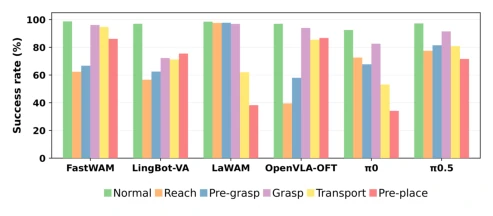
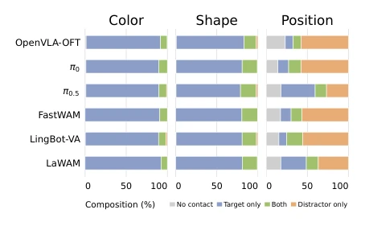

This paper gives robot foundation models a "visual checkup", but the checkup report might have some "false positives". LIBERO-VPro indeed breaks down visual robustness quite finely, 12 challenge categories sound impressive, but essentially it is still "pitting Guan Gong against Qin Qiong" within the LIBERO simulation environment. Although claiming 190,000 simulation + 200 real-world, but those 200 rollouts in the real world seem more like "endorsement" for the simulation conclusions, rather than independent verification. The most biting critique is that results prove these large models are "straight-A students" under clean data, once encountering occlusion or viewpoint conflict, they "reveal their true forms", especially the WAM model, where recursive feedback for predicting future frames collapses directly, indicating that the so-called "world models" might just be "blind guessing" within the closed loop. However,
Fig. 1. Overview of LIBERO-VPro. The benchmark organizes 12 challenge categories into four complementary dimensions of closed-loop visual robustness: Visual Evidence Degradation, Camera Staleness, Visual Source Consistency, and Task-Relevant Scene Variation. LIBERO-VPro comprises 96 experimental settings and 3,296 task-condition cases.
Fig. 3. Success rate (%) under Interaction-Cue Masking.

Fig. 4. Success rate (%) under phase-triggered Observation Corruption.

Fig. 5. Robot-object contact composition under three Task-Relevant distractors. Each bar partitions trials by whether the gripper contacts the target, the distractor, both, or neither.